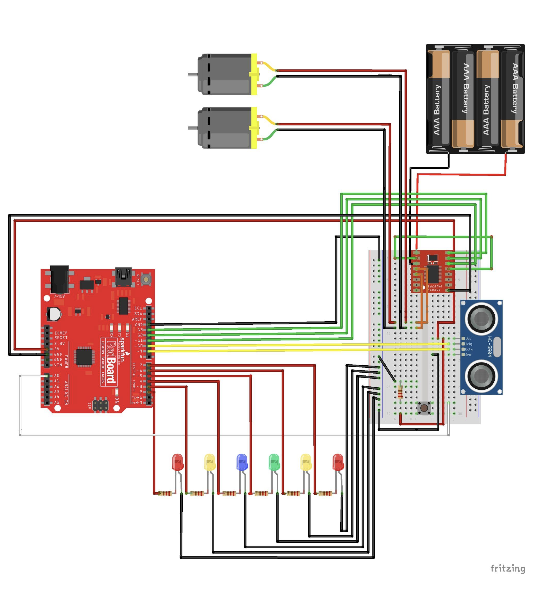
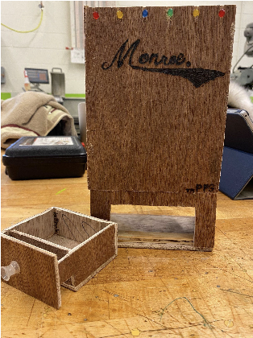
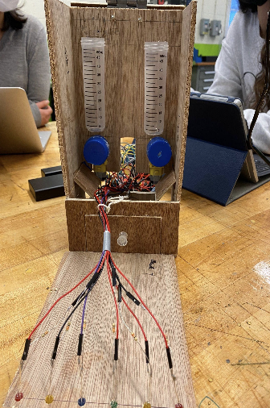

Automatic Medication Dispenser

Project Summary
The Automatic Medication Dispenser is a user-friendly, Arduino-based device designed to help people take their medications on time and safely. Inspired by challenges faced by busy students, the elderly, and those with time-sensitive medications, this project automates pill dispensing, features a child-safe container, and provides clear notifications through LEDs and sound.
- Reliable Reminders: Uses a timer, motorized wheel, and LEDs to remind users and dispense the correct medication dose at the right time.
- Child Safety: Only dispenses pills into a protected drawer that is difficult for children to access.
- Interactive Feedback: Six LEDs blink in sequence, and a buzzer sounds until the user retrieves the medication.
- Smart Sensing: An ultrasonic sensor detects when the drawer is opened and stops the notification circuit.
- Efficient Design: Built with an Arduino, DC motors, custom wheels, and a breadboard for easy prototyping and troubleshooting.


Technical Highlights
- Electronics: All components (LEDs, motors, ultrasonic sensor, and button) are powered and controlled via Arduino and a breadboard. The Fritzing diagram above shows the full wiring.
- Programming: Custom Arduino code manages the timed motor spins, LED chaser circuit, and ultrasonic sensing logic.
- Mechanical: The wheel mechanism ensures only one pill is dispensed at a time, and the slanted tube design prevents jamming.
- Physical Build: The enclosure is made from wood, with a lockable drawer and clear LED indicator panel.
Lessons Learned
- Precise distance and orientation between the pill tube and the wheel are crucial to ensure only one pill dispenses at a time (accounting for gravity and pill shape).
- Iterative prototyping and troubleshooting were vital—early versions faced jamming and electrical noise issues, solved by redesigning and improving the wheel and enclosure.
- Child safety must be considered at both the hardware and software level.
- Collaboration, task division, and regular testing made the project successful and manageable.
- Documentation and clear wiring (as in the Fritzing diagram) are essential for building and debugging complex embedded systems.